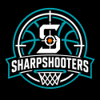

Sharpshooters — team report
Context on the rebuild
Tom took over this team recently, and the aggressive rebuild — new Trainer, 5 new players, an arena expansion, then 6 more players cut — reads as the start of his tenure, not a mid-season pivot. The early results (see the live record in the Overview tab) predate that rebuild settling in. Training is set to Rebounding (C/PF), matching this report's own recommendation. This note is hand-written context, not auto-updated — see the Overview and Roster tabs for what's actually live right now.
Live snapshot
Auto-updated dailyAbout the live snapshot below
Straight from the official API, refreshed every day by a GitHub Actions job — the stat cards above are the dated manual analysis and stay fixed until the next full manual refresh.
Loading live data…
Loading live data…
Investment tracker
Auto-updated dailyWhat counts as an "investment" here
Every dated capital outlay pulled from the official economy ledger — player transfer purchases (and sales, if any) and lump-sum facility spend like the arena expansion — accumulated into a running ledger each time this report runs, since the API only ever shows the current and prior week. Recurring weekly costs (salaries, scouting) are operating expenses, not investments, but they do roll into each player's TCO (total cost of ownership: price paid + salary paid while owned) below, so cost-per-player is measured against the full bill, not just the transfer fee. Arena spend is tracked the same way against real gate revenue, bucketed automatically by capacity/price regime as arena.aspx changes.
Loading live data…
Schedule & standings
Auto-updated dailyAbout this section
Straight from the official API — upcoming fixtures, recent results, and your conference standings. Refreshed automatically every day, no manual step required.
Loading live data…
Recent cash movement
Auto-updated dailyAbout this ledger
Itemized transactions from the official API's economy ledger (last week and this week), running balance computed from each week's confirmed opening balance. Zero-amount placeholder entries (e.g. an unplayed match's revenue row) are omitted.
Loading live data…
This week's live category breakdown
Auto-updated dailyAbout this breakdown
The official API's own category breakdown for the current and prior week, refreshed daily.
Loading live data…
Arena & attendance
Auto-updated dailyLoading live data…
Loading live data…
| Bleachers (+162 seats) | $200 |
| Lower Tier (+42 seats) | $700 |
| Courtside (+48 seats) | $2,000 |
| Luxury Boxes (+3 boxes) | $16,000 |
| Total expansion cost | $205,800 |
Sellout revenue math
Calculated At today's prices and full capacity, one sellout ≈ $92,298 in gate receipts (5,438×$12 + 500×$38 + 60×$106 + 2×$841). Once the expansion lands, the new max sellout ≈ $103,449 at these same prices (5,600×$12 + 542×$38 + 108×$106 + 5×$841, 6,255 total seats).
Roster changes since last automated check
Auto-updated dailyLoading live data…
Staff, training & scouting
Auto-updated dailyLoading live data…
Training focus, scouting
Official · training.aspx Training is set to Rebounding, C/PF — an individual skill focus for Centers and Power Forwards, not Team Training. training.aspx has no API endpoint, so this line is carried over from the last screenshot check, not live.
Skill ratings (as shown in-game)
Auto-updated dailyLoading live data…
Minutes vs. money — this week
Auto-updated dailyAbout this section
Live total minutes (any position, not just the training-focused ones) via boxscore.aspx across this training-week's played matches.
Loading live data…
Roster by position group
Auto-updated dailyLoading live data…
Live standings context
Auto-updated dailyStandings context
Loading live data…
A per-team $/player comparison against the rest of the division needs a third-party tool (Buzzer Manager) with a live browser session, which this automated pipeline doesn't have — add that manually here when you refresh it by hand.
Fan sentiment
Official · read manually from in-game surveyAbout this survey
Read from the in-game dot scale (out of 5) — there's no API endpoint for this, so it's updated by hand whenever you check it, not by the daily job.
Not yet filled in for this report — open buzzerbeater.com/team/<id>/fanSurvey.aspx and add the current dots here.
Training minutes calculator
Calculated · updates instantlyHow this works
Pick any training type and position combo from the live training.aspx dropdowns, and every roster player who'd be affected is recalculated instantly against this week's actual minutes (via boxscore.aspx) - no page reload, no waiting on tomorrow's snapshot. This is independent of whatever training is actually set in-game right now (see "What's actually being trained right now" below for that).
Loading live data…
Training candidates & skills
Auto-updated dailyAbout these skill ratings
Cards below are pulled live from the official API each run, laid out the same way the game shows a player page. Thresholds: 45min (18–19yo), 48min (20–26yo), 40min (27+yo). Skill ratings use the Game Manual's full 20-level scale and exact color coding (1 atrocious … 20 legendary).
Loading live data…
General training priorities
Your stated doctrineStanding training doctrine
Recorded here as the standing framework for training decisions going forward, not just for the current cohort.
- ISP first — Inside Shot, Inside Defense, Rebounding are the priority group.
- Shot Blocking deliberately lower than those other three ISP skills — it adds too much salary for the value it returns.
- Passing and Driving are important — next tier.
- Shooting (Jump Shot) and Outside Defense — after that.
- Jump Range — generally not a priority.
- OSP first — the outside-skill group.
- Jump Range deliberately lower than the other outside skills — same salary-cost logic as Shot Blocking for bigs.
- Passing is important — even more so for point guards.
- Inside Scoring and Rebounding also matter for guards.
Universal training targets
Universal targets, regardless of position: Stamina 6–8, Free Throw 7+.
Team Training vs. individual skills
Official · training.aspx mechanics Stamina and Free Throw are only trainable through Team Training mode (alongside Game Shape), which is mutually exclusive with the 10 individual position-skill categories — only one training focus is active for the whole team at a time. Hitting the Stamina 6–8 / Free Throw 7+ targets means periodically rotating into Team Training, which pauses individual skill development for everyone while it's active.
Sources
The sections tagged "Auto-updated daily" above are filled in from a SQLite snapshot fetched from this page's own report.db (written once a day by a GitHub Actions job talking to the official BuzzerBeater API). Everything else on this page is hand-written analysis, kept as-is until you update it manually.
buzzerbeater.comofficial API (bbapi.buzzerbeater.com) — teaminfo, roster, economy, schedule, standings, arena, staff, boxscore endpoints, fetched daily.buzzerbeater.com/manage/training.aspxandfanSurvey.aspx— no API endpoint; update these sections by hand when you check them in-browser.buzzerbeater.com/community/rules.aspx?nav=Nomenclature— Game Manual: full 20-level skill adjective scale and full potential scale, verbatim.